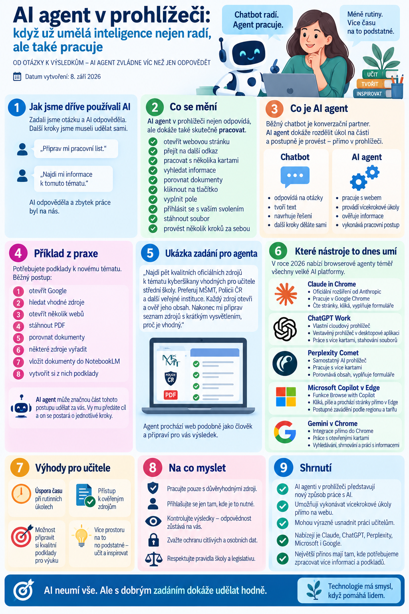

Ještě donedávna jsme umělou inteligenci používali hlavně tak, že jsme jí položili otázku a ona nám odpověděla.
Napsali jsme:
Připrav mi pracovní list.
nebo:
Najdi mi informace k tomuto tématu.
AI odpověděla a další práci jsme už udělali sami.
Teď se ale začíná prosazovat trochu jiný způsob práce: AI agenti v internetovém prohlížeči.
Takový agent nejen odpovídá. Dokáže také:
- otevřít webovou stránku,
- přejít na další odkaz,
- pracovat s několika kartami,
- vyhledat informace,
- porovnat dokumenty,
- kliknout na tlačítko,
- vyplnit pole,
- přihlásit se s vaším svolením,
- stáhnout soubor,
- nebo provést několik kroků za sebou.
Jinými slovy:
chatbot radí, agent pracuje.
A právě to může být pro učitele dost zásadní změna.

Co je vlastně AI agent
Běžný chatbot funguje převážně jako konverzační partner.
Například:
Najdi mi metodiky MŠMT k rizikovému chování.
AI vám může vytvořit seznam dokumentů.
Agentovi ale můžeme zadat:
Najdi aktuální metodiky MŠMT k rizikovému chování, každý dokument otevři, ověř, zda jde o aktuální verzi, a připrav mi přehled zdrojů.
Agent potom může úkol rozdělit na několik částí a postupně je provést.
Pokud má přístup k prohlížeči, skutečně otevře stránky a pracuje s nimi.
To už není jen generování textu.
Je to vykonávání pracovního postupu.
Jak to vypadá v praxi
Představte si běžnou učitelskou práci. Potřebujete připravit podklady k novému tématu.
Normálně byste:
- otevřeli Google,
- hledali vhodné zdroje,
- otevřeli několik webových stránek,
- stáhli PDF,
- porovnali dokumenty,
- některé zdroje vyřadili,
- vložili dokumenty do NotebookLM,
- vytvořili si z nich podklady.
Agent může značnou část tohoto postupu udělat za vás.
Vy mu místo deseti jednotlivých příkazů předáte cíl.
Například:
Agent potom prochází web podobně jako člověk.
Které AI nástroje to dnes umí
Browseroví agenti nejsou záležitostí jedné firmy. Během roku 2026 je začaly nabízet téměř všechny velké AI platformy.
Claude in Chrome
Claude od společnosti Anthropic nabízí rozšíření Claude in Chrome.
Claude díky němu může pracovat přímo s otevřenými stránkami v Google Chrome.
Dokáže stránky číst, klikat na prvky a navigovat mezi nimi. Funkci lze spouštět přímo z bočního panelu Chrome nebo přes další agentní prostředí Claude.
Pro učitele je zajímavé, že agent pracuje v běžném prohlížeči.
Můžete mít například otevřený:
- web MŠMT,
- NotebookLM,
- Google Drive,
- metodický portál,
a Claude může podle vašich pokynů mezi stránkami pracovat.
Právě tento nástroj jsme použili například při přípravě odborných sešitů v NotebookLM.
ChatGPT Work
Podobným směrem se vydává také ChatGPT.
V režimu ChatGPT Work může ChatGPT využívat vlastní cloudový prohlížeč, ve kterém dokáže číst stránky, klikat, vyplňovat formuláře a vykonávat vícekrokové úlohy.
V desktopové aplikaci ChatGPT je navíc k dispozici vestavěný prohlížeč.
Uživatel i ChatGPT vidí stejnou stránku a AI může pracovat napříč několika kartami, stahovat soubory nebo počkat, až se uživatel přihlásí.
Princip je tedy podobný:
Nedávám AI pouze otázku. Předávám jí úkol.
Perplexity Comet
Perplexity zvolilo jinou cestu.
Nevytvořilo pouze rozšíření, ale celý vlastní internetový prohlížeč nazvaný Comet.
Je založený na Chromiu a obsahuje přímo zabudovaného AI asistenta. Ten může pracovat s otevřenými kartami, shrnovat stránky, vyhledávat informace a také provádět určité akce na webu.
Comet například umí:
- pracovat s několika otevřenými stránkami,
- porovnávat jejich obsah,
- vyplňovat formuláře,
- klikat,
- organizovat informace,
- nebo vykonávat delší webové workflow.
Pro běžného uživatele je rozdíl hlavně v tom, že místo Chrome používá celý nový AI prohlížeč.
Microsoft Copilot v Edge
Také Microsoft přidává agentní funkce přímo do prohlížeče Edge.
Funkce Browse with Copilot umožňuje Copilotu klikat, psát a procházet stránky přímo v Edge.
Uživatel přitom vidí jeho jednotlivé kroky a může kdykoli převzít řízení.
To může být do budoucna velmi zajímavé právě pro školy, které fungují převážně v prostředí Microsoft 365.
Dostupnost této funkce se ale zatím liší podle regionu a předplatného. Microsoft ji v současnosti zavádí postupně.
Gemini v Chrome
Google samozřejmě nezůstává stranou.
Do Chrome postupně přidává Gemini in Chrome a funkci auto browse.
Ta umožňuje Gemini vykonávat vícekrokové webové úkoly, například vyhledávat, porovnávat informace nebo pracovat s různými webovými službami.
Google zároveň rozvíjí agenta Gemini Spark, který může využívat Chrome k práci s webem.
Pro školy by tento směr mohl být velmi zajímavý hlavně kvůli propojení s:
- Google Drive,
- Gmail,
- Calendar,
- NotebookLM,
- dalšími službami Google.
Agentní funkce Chrome se ale stále zavádějí postupně a některé jsou v současnosti omezené podle regionu, typu účtu nebo předplatného.
Co může browserový agent dělat učiteli
Tady už začíná být celá věc opravdu zajímavá.
Agent může například pomoci s:
Rešerší
Najdi aktuální dokumenty MŠMT k hodnocení žáků a připrav mi seznam nejdůležitějších změn.
Přípravou zdrojů
Najdi pět kvalitních zdrojů k tématu domácího násilí vhodných pro výuku občanské nauky ve 2. ročníku.
Kontrolou zdrojů
Otevři všechny tyto odkazy a zjisti, zda jsou stále funkční a aktuální.
Porovnáním dokumentů
Porovnej tuto starší metodiku s novou verzí a vypiš hlavní změny.
Přípravou NotebookLM
Najdi vhodné zdroje, ověř je a připrav z nich tematický notebook.
Prací s webovými aplikacemi
Pokud mu dáme odpovídající oprávnění, může agent pracovat také přímo uvnitř některých webových aplikací.
Právě tady ale začíná být nutná větší opatrnost.
Největší změna není technologická
Podstatná změna podle mě není v tom, že AI umí kliknout na tlačítko. To samo o sobě není nijak převratné.
Změna je ve způsobu zadávání práce.
Dříve jsme AI říkali:
Udělej krok číslo jedna.
Potom:
Udělej krok číslo dva.
A potom:
Udělej krok číslo tři.
Agentovi můžeme říct:
Tohle je výsledek, kterého potřebuji dosáhnout. Navrhni postup a jednotlivé kroky proveď.
A to už je zásadně jiný způsob spolupráce s AI.
Agent není kouzelník
Tady je ale potřeba trochu přibrzdit nadšení.
Agent může udělat chybu.
Může:
- kliknout na špatný odkaz,
- vybrat nevhodný dokument,
- přehlédnout novější verzi,
- špatně pochopit zadání,
- vyplnit něco do nesprávného pole,
- nebo provést krok, který jsme vůbec nezamýšleli.
Čím více oprávnění agent dostane, tím větší může mít jeho chyba následky.
velmi schopného pomocníka pod dohledem, nikoli autonomního zaměstnance školy.
Velký problém: osobní údaje
Pro školy je tu ještě jedna zásadní věc.
Browserový agent může vidět obsah stránky, se kterou právě pracuje.
Pokud tedy otevřeme:
- Bakaláře,
- školní e-mail,
- databázi žáků,
- poradenskou dokumentaci,
- zdravotní informace,
- dokumenty PPP,
může se agent potenciálně dostat k osobním nebo citlivým údajům.
Proto bych byla velmi opatrná.
Pro první experimenty je mnohem lepší pracovat s:
- veřejnými webovými stránkami,
- metodikami,
- legislativou,
- učebními materiály,
- anonymními dokumenty.
Reálná data žáků bych do podobných experimentů vůbec nezapojovala bez jasně nastavených pravidel školy.
Pozor také na prompt injection
Browseroví agenti přinášejí ještě jeden nový typ rizika.
Na webové stránce může být ukryt text, který se pokusí AI přimět, aby udělala něco jiného, než jste jí zadali.
Tomuto typu útoku se říká prompt injection.
Výrobci agentů proto přidávají různá bezpečnostní opatření a potvrzování citlivých operací. Anthropic například přímo upozorňuje, že browserový agent má vyšší bezpečnostní rizika než běžný chatbot, protože může s webovými stránkami aktivně interagovat.
Podobná ochranná opatření popisují také Google a Perplexity.
Ani tady tedy neplatí:
„AI to udělá, já to nemusím kontrolovat.“
Spíš naopak.
Jak s browserovým agentem začít
Pro první pokus bych zvolila něco úplně bezpečného.
Například:
Potom můžeme úkol rozšířit:
A později:
Takhle se člověk postupně naučí sledovat:
- co agent dělá,
- kdy potřebuje pomoc,
- kde chybuje,
- co je vhodné mu svěřit,
- a co je lepší udělat ručně.
Jedno jednoduché pravidlo
Při práci s AI agentem bych se držela jednoduchého pravidla:
Čím větší důsledky má chyba, tím větší musí být lidská kontrola.
Vyhledání pěti metodických zdrojů?
Klidně agent.
Rozeslání oficiálního e-mailu rodičům?
Raději před odesláním zkontrolovat.
Změna údajů v informačním systému?
Velká opatrnost.
Rozhodnutí týkající se konkrétního žáka?
To už není úkol, který bych nechala na agentovi.
Od chatbotů k agentům
Browseroví agenti jsou podle mě důležitým krokem ve vývoji AI.
Ne proto, že by nahradili učitele.
Ale proto, že začínají odstraňovat jednu z nejotravnějších částí digitální práce:
nekonečné klikání mezi systémy, hledání dokumentů, kopírování údajů a opakování stejných kroků.
A právě tam může být jejich největší přínos pro školství.
Ne v tom, že budou rozhodovat za učitele.
Ale v tom, že mohou převzít část rutinní digitální práce kolem něj.
Možná se tak postupně dostáváme od otázky:
„Co mi AI odpoví?“
k mnohem zajímavější otázce:
„Co může AI udělat za mě – a co už jí naopak svěřit nechci?“